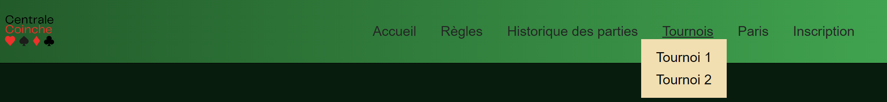
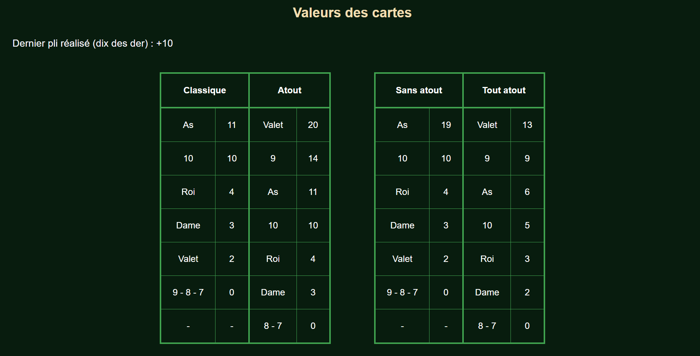
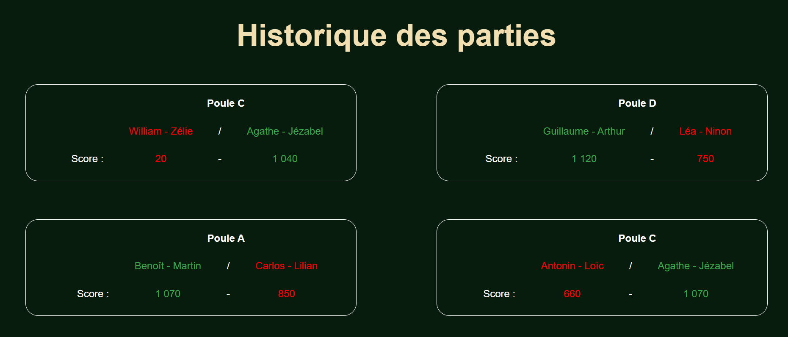
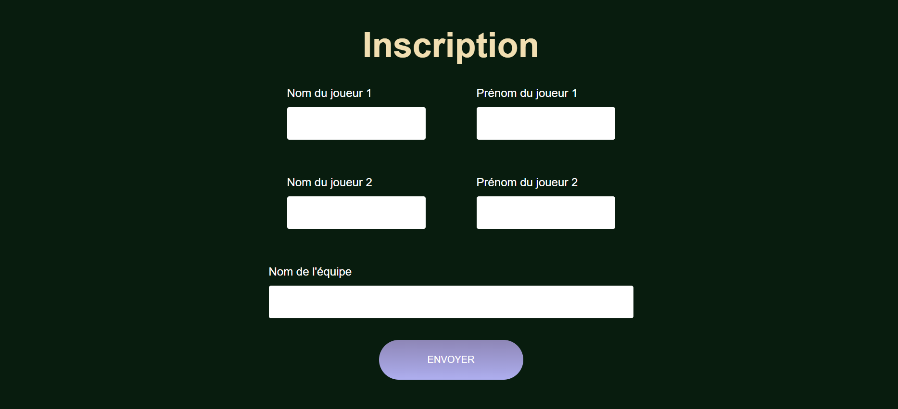

Web Front : Centrale Coinche
- POK
- 2023-2024
- temps 1
- Web Front
- HTML
- CSS
- Coinche
- Nicolas Ouzoulias
Le premier POK de l'année pour apprendre à programmer la partie front d'un site web.
Je n'ai jamais pratiqué le developpement Web je cherche donc à travers ce POK à :
- Apprendre les bases du HTML
- Apprendre les base du CSS
- Les mettre en pratique en codant mon premier site
- Aider mes confrères centraliens fan de Coinche
L'ensemble de mon code est disponible sur mon GitHub ici.
Sommaire
I. Le Front pour les nuls
II. Mon petit site Web à moi : Centrale Coinche
III. Prochaines avancées
IV. Conclusion
I. Le Front pour les nuls
Tout d'abord pourquoi deux langages séparés et pas un seul ? Les deux fonctionnent de paire, le HTML permet de créer et de structurer le contenu tandis que le CSS s'occupe de la mise en forme visuelle.
Le développement Web est divisé en 2 parties :
- Le front : c'est la partie apparente du site (l'interface, les boutons, les menus, ...), c'est le lien direct avec l'utilisateur
- Le back : c'est les composantes cachées du site (les bases de données, les serveurs, l'infrastructure,...)
Le HTML
Exemple de code HTML
<!DOCTYPE html> <!--Indispensable en début de code car indique qu'il s'agit d'une page HTML-->
<html lang="fr">
<head>
<meta charset="utf-8"> <!--Pour afficher les caractères spéciaux-->
<title> Ceci est un titre </title>
</head>
<body>
<!-- Le corps du site -->
<img> <!-- Balise orpheline -->
</body>
</html>Il existe ensuite de multiples balises pour organiser le texte et insérer des éléments comme par exemple :
<p></p>pour les paragraphes<br>pour les sauts de ligne<h1></h1>jusqu'à 6 pour les niveaux de titres<img>pour insérer une image<a>pour les liens web<ul></ul>et<ol></ol>pour lister en mettant<li> </li>à chaque élément
Le CSS
Le CSS étant un complément au HTML, il faut demander à ce dernier de l'appeler, pour cela on rentre la commande :
<head> <!-- Cela doit obligatoirement dans <head> -->
<link href="style.css" rel="stylesheet">
</head>Ce langage permet de rendre plus esthétique un code HTML en modifiant de multiples paramètres visuels des balises comme la couleur, la taille, la disposition, ...
p,
li {
font-size: 1.1em;
color: #f9f8ff;
margin-bottom: 20px;
text-align: justify;
line-height: 1.2;
}Ici par exemple je modifie la taille et la couleur de la police, la marge inférieure et l'interligne des balises <p> et <li>.
II. Mon petit site Web à moi : Centrale Coinche
Centrale est actuellement le lieu d'un tournoi déchainé de Coinche entre une cinquantaine d'étudiants, n'étant pas spécialement un grand fan du jeu j'ai tout de même décidé de profiter de ce POK pour réaliser un site servant à regrouper les informations utiles pour ce tournoi.
Fonctionnalités du site
L'idée du site m'est venu en parlant avec mes amis coincheurs de paris sur les prochains matchs du tournoi à venir. Je me suis alors dit que je pouvais orienter mon site pour le POK autours de cette idée de créer un système de paris sportifs de coinche centralienne.
En plus de l'objectif de paris sportifs, le site doit servir de référence pour suivre l'avancé du tournoi en cours, visualiser les règles et les résultats des précédents tournois ou encore pour s'inscrire.
Structure du site
Mon site est organisé avec plusieurs onglets afin de classer les diverses informations. Le <header> </header> permet d'afficher les liens de navigation entre les différentes pages.
Cliquez pour afficher le code HTML de l'en-tête
Cliquez pour afficher le code HTML de l'en-tête
<header>
<nav>
<img src="images/logo.png" alt="logo centrale coinche" width="90" height="90">
<div>
<a href="index.html">Accueil</a>
<a href="regles.html">Règles</a>
<a href="histo.html">Historique des parties</a>
<div class="develop">
<a href="tournois.html">Tournois</a>
<div class="sous-menu">
<a href="tournoi1.html">Tournoi 1</a>
<a href="tournoi2.html">Tournoi 2</a>
</div>
<a href="paris.html">Paris</a>
<a href="inscription.html">Inscription</a>
</div>
</nav>
</header>
Cliquez pour afficher le code CSS de l'en-tête
Cliquez pour afficher le code CSS de l'en-tête
nav{
background: linear-gradient(to left, #0da352, #0b5b2c);
display: flex;
flex-direction: row;
align-items: center;
justify-content: space-between;
padding-right: 50px;
}
nav a{
margin-left: 30px;
font-size: larger;
}
header{
border-bottom: 1px solid black;
margin-bottom: 10px;
}
a:hover {
text-decoration: underline;
}
.develop {
display: inline-block;
position: relative;
}
.sous-menu {
position: absolute;
width: 40%;
align-items: center;
background-color: wheat;
padding-top: 10px;
padding-bottom: 10px;
display: none;
}
.sous-menu a {
display: block;
text-decoration: none;
color: black;
margin: auto;
padding: 5px;
text-align: center;
}
.sous-menu a:hover{
text-decoration: underline;
}
.develop:hover .sous-menu {
display: block;
}
Le pied de page quant à lui sert de zone de contact pour l'utilisateur.
Cliquez pour afficher le code HTML du pied de page
Cliquez pour afficher le code HTML du pied de page
<footer>
<div class="footer-contenu">
<div class="gauche">
<h3>Contact site : </h3>
<ul>
<li> Nicolas Ouzoulias</li>
<li> nicolas.ouzoulias@centrale-marseille.fr </li>
<a href="https://www.facebook.com/nicolas.ouzoulias/">
<img src="images/logo-fb.png" alt="logo messenger" width="50" height="50"></a>
</ul>
</div>
<div class="droite">
<h3>Contact tournoi : </h3>
<ul>
<li> Guillaume Villard</li>
<li> guillaume.villard@centrale-marseille.fr </li>
<a href="https://www.facebook.com/guillaume.villard17">
<img src="images/logo-fb.png" alt="logo messenger" width="50" height="50"></a>
</div>
</div>
</footer>
Cliquez pour afficher le code CSS du pied de page
Cliquez pour afficher le code CSS du pied de page
footer{
background: linear-gradient(to left, #0da352, #0b5b2c);
display: flex;
flex-direction: row;
align-items: center;
justify-content: space-between;
padding-right: 50px;
.footer-contenu{
padding-top: 10px;
display: flex;
gap: 50px;
flex-direction: row;
justify-content: space-between;
margin-left: 30px;
}
footer p, footer li{
margin-bottom: 0px;
}
}Pages de présentation
Les pages d'accueil, d'explication des règles et d'historique des parties sont des pages d'affichage uniquement. A travers ces dernières j'ai pu utiliser diverses balises HTML et apprendre à les manipuler en CSS pour afficher correctement ce que je souhaite.
Par exemple dans l'onglet "Règles" je présente tout d'abord quelques règles d'une partie avant de faire un rappel des différentes valeurs des cartes sous forme de tableau.
Cliquez pour afficher le code HTML du tableau des valeurs
Cliquez pour afficher le code HTML du tableau des valeurs
<section class="valeurs">
<h2>Valeurs des cartes</h2>
<p> Dernier pli réalisé (dix des der) : +10 </p>
<section class="tableaux">
<table>
<thead>
<th colspan="2">Classique</th>
<th colspan="2">Atout</th>
</thead>
<tr>
<td>As</td>
<td>11</td>
<td class="middle">Valet</td>
<td>20</td>
</tr>
<tr>
<td>10</td>
<td>10</td>
<td class="middle">9</td>
<td>14</td>
</tr>
<tr>
<td>Roi</td>
<td>4</td>
<td class="middle">As</td>
<td>11</td>
</tr>
<tr>
<td>Dame</td>
<td>3</td>
<td class="middle">10</td>
<td>10</td>
</tr>
<tr>
<td>Valet</td>
<td>2</td>
<td class="middle">Roi</td>
<td>4</td>
</tr>
<tr>
<td>9 - 8 - 7</td>
<td>0</td>
<td class="middle">Dame</td>
<td>3</td>
</tr>
<tr>
<td>-</td>
<td>-</td>
<td class="middle">8 - 7</td>
<td>0</td>
</tr>
</table>
<table>
<thead>
<th colspan="2">Sans atout</th>
<th colspan="2">Tout atout</th>
</thead>
<tr>
<td>As</td>
<td>19</td>
<td class="middle">Valet</td>
<td>13</td>
</tr>
<tr>
<td>10</td>
<td>10</td>
<td class="middle">9</td>
<td>9</td>
</tr>
<tr>
<td>Roi</td>
<td>4</td>
<td class="middle">As</td>
<td>6</td>
</tr>
<tr>
<td>Dame</td>
<td>3</td>
<td class="middle">10</td>
<td>5</td>
</tr>
<tr>
<td>Valet</td>
<td>2</td>
<td class="middle">Roi</td>
<td>3</td>
</tr>
<tr>
<td>9 - 8 - 7</td>
<td>0</td>
<td class="middle">Dame</td>
<td>2</td>
</tr>
<tr>
<td>-</td>
<td>-</td>
<td class="middle">8 - 7</td>
<td>0</td>
</tr>
</table>
</section>
</section>
Cliquez pour afficher le code CSS du tableau des valeurs
Cliquez pour afficher le code CSS du tableau des valeurs
.tableaux{
display: flex;
width: 60%;
flex-direction: row;
align-items: center;
justify-content: space-around;
margin: auto;
margin-bottom: 60px;
}
table, td {
border: 1px solid #0da352 ;
}
table,th {
border : 3px solid #0da352;
}
.middle{
border-left : 3px solid #0da352;
}
Cliquez pour afficher le code HTML de l'historique des parties
Cliquez pour afficher le code HTML de l'historique des parties
<main>
<h1> Historique des parties</h1>
<section class="results">
<div>
<div class="recap-match">
<table>
<thead>
<th></th>
<th colspan="3"> Poule C</th>
</thead>
<tr>
<td> </td>
<td class="def"> William - Zélie</td>
<td> / </td>
<td class="vic"> Agathe - Jézabel</td>
</tr>
<tr>
<td> Score : </td>
<td class="def"> 20 </td>
<td> - </td>
<td class="vic"> 1 040 </td>
</tr>
</table>
</div>
<div class="recap-match">
<table>
<thead>
<th></th>
<th colspan="3"> Poule D</th>
</thead>
<tr>
<td> </td>
<td class="vic"> Antonin - Loïc</td>
<td> / </td>
<td class="def"> William - Zélie</td>
</tr>
<tr>
<td> Score : </td>
<td class="vic"> 1 000 </td>
<td> - </td>
<td class="def"> 300 </td>
</tr>
</table>
</div>
</div>
<div>
<div class="recap-match">
<table>
<thead>
<th></th>
<th colspan="3"> Poule A</th>
</thead>
<tr>
<td> </td>
<td class="vic"> Benoît - Martin</td>
<td> / </td>
<td class="def"> Carlos - Lilian</td>
</tr>
<tr>
<td> Score : </td>
<td class="vic"> 1 070 </td>
<td> - </td>
<td class="def"> 850 </td>
</tr>
</table>
</div>
<div class="recap-match">
<table>
<thead>
<th></th>
<th colspan="3"> Poule C</th>
</thead>
<tr>
<td> </td>
<td class="def"> Antonin - Loïc</td>
<td> / </td>
<td class="vic"> Agathe - Jézabel</td>
</tr>
<tr>
<td> Score : </td>
<td class="def"> 660 </td>
<td> - </td>
<td class="vic"> 1 070 </td>
</tr>
</table>
</div>
</div>
</section>
</main>
Cliquez pour afficher le code CSS de l'historique des parties
Cliquez pour afficher le code CSS de l'historique des parties
.results div{
display: flex;
flex-direction: row;
justify-content: center;
gap: 10%;
margin-bottom: 30px;
}
.recap-match{
border: 1px white solid;
border-radius: 20px;
padding-bottom: 20px;
padding-left: 20px;
width: 500px;
}
.recap-match p{
margin-left: 10px;
margin-top: 10px;
text-align: center;
}
.vic{
color: #0da352;
}
.def{
color: red;
}
Ces onglets m'ont permis de bien pratiquer l'utilisation des balises HTML ainsi que leurs paramètres CSS associées. J'ai notamment pu manipuler les flexboxs ainsi que les tables pour mieux positioner mes éléments sur la pages.
Ces 2 pages permettent de visualiser rapidement des informations pratiques sur le tournoi comme par exemple les dernières victoires et défaites pour savoir quel équipe est particulièrement bien préparée ou non.
(Petit rappel, le nombre de point nécessaire pour la victoire est de 1 000 points, cela permet de bien comprendre l'état de forme de l'équipe de William par exemple)
Page d'inscription
En plus de cela je souhaite que mon site serve de lieu d'inscription pour les futurs tournois, j'utilise pour cela des balises <input>.
Cliquez pour afficher le code HTML du formulaire
Cliquez pour afficher le code HTML du formulaire
<section class="formulaire">
<h1>Inscription</h1>
<form method="get" action="">
<div class="form-noms">
<div class="form-column">
<label for="nom1">Nom du joueur 1</label>
<input type="text" name="nom1" id="nom1">
</div>
<div class="form-column">
<label for="prenom1">Prénom du joueur 1</label>
<input type="text" name="prenom1" id="prenom1">
</div>
</div>
<div class="form-noms">
<div class="form-column">
<label for="nom2">Nom du joueur 2</label>
<input type="text" name="nom1" id="nom1">
</div>
<div class="form-column">
<label for="prenom2">Prénom du joueur 2</label>
<input type="text" name="prenom2" id="prenom2">
</div>
</div>
<label for="nom-equipe"> Nom de l'équipe </label>
<input type="text" name="nom-equipe" id="nom-equipe">
<input type="submit" value="ENVOYER" class="cta" />
</form>
</section>
Cliquez pour afficher le code CSS du formulaire
Cliquez pour afficher le code CSS du formulaire
h1{
padding-top: 30px;
}
form {
display: flex;
flex-direction: column;
width: 40%;
margin: auto;
color: white;
margin-bottom: 50px;
}
.form-noms {
display: flex;
flex-direction: row;
gap: 20px;
}
.form-column {
display: flex;
flex-direction: column;
margin: auto;
margin-bottom: 50px;
}
input,
textarea {
padding: 15px;
border-radius: 3px;
border: none;
}
label {
margin-bottom: 10px;
}
input[type='submit'] {
width: 200px;
margin: auto;
margin-top: 30px;
}
.cta {
display: inline-block;
background: linear-gradient(#8e86b5, #acaeed);
color: white;
border-radius: 50px;
padding: 20px 30px;
}
.cta:hover {
background: linear-gradient(#696484, #8788ba);
text-decoration: none;
}
III. Prochaines avancées
N'ayant initialement aucune connaissance en développement web je n'ai eu le temps de faire que du front lors de ce premier POK de l'année. En effet parmi les 20h de ce dernier, de nombreuses ont été utiles pour apprendre le fonctionnement des deux langages ainsi que la multitude de fonctionnalités.
L'objectif principal de faire un site de paris de coinche n'a pas pu être abouti mais je pense me pencher dessus pour le prochain POK afin de manipuler le back du site.
Je souhaite également mettre en place un système de mise à jour automatique de l'historique des parties ainsi que de finir l'inscription et l'onglet pour récapituler les avancées des tournois.
IV. Conclusion
J'ai beaucoup aimé découvrir le développement Front à travers ce POK même si cela a été un peu chaotique et long au début car je n'avais vraiment aucune notion et j'étais donc très lent pour la prise en main des langages.
Une fois ces derniers un peu plus maîtrisés, la réalisation de mon premier site Web s'est très bien passé et j'ai pu testé de nombreuses fonctionnalités HTML et CSS.
Je n'ai pas pu incorporer les fonctionnalités principales que je souhaitais au départ par manque de temps et car c'est finalement sur tout le Back du site qu'il faut travailler pour cela, mais je pense orienter mon deuxième POK pour effectuer cela.
Sources
- Créez votre site web avec HTML5 et CSS3. OpenClassrooms. https://openclassrooms.com/fr/courses/1603881-creez-votre-site-web-avec-html5-et-css3